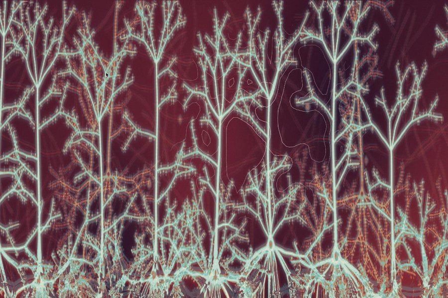
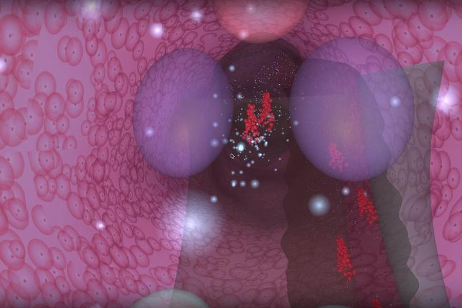
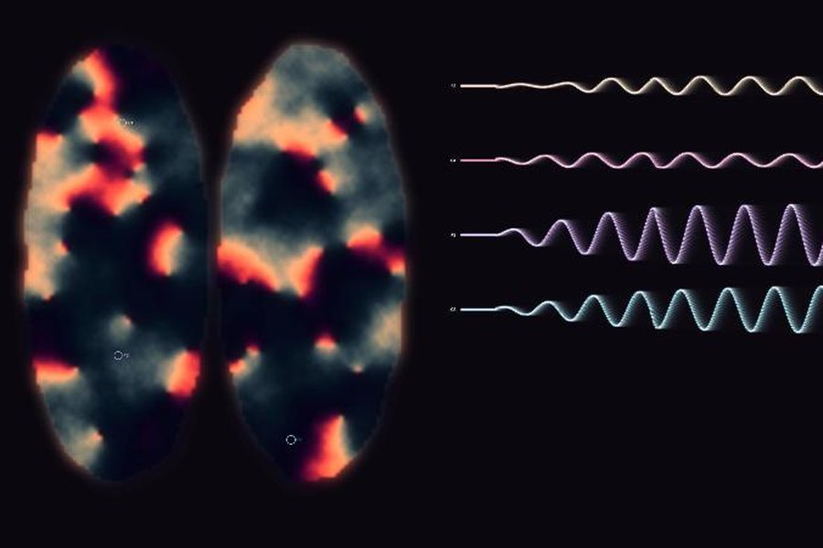
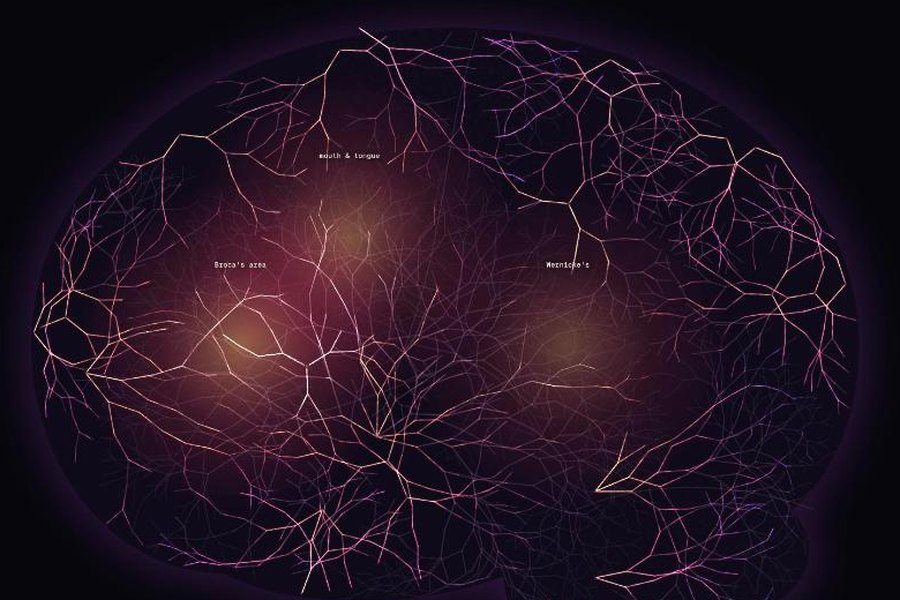
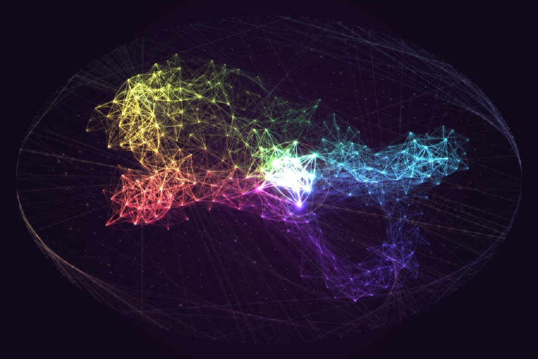
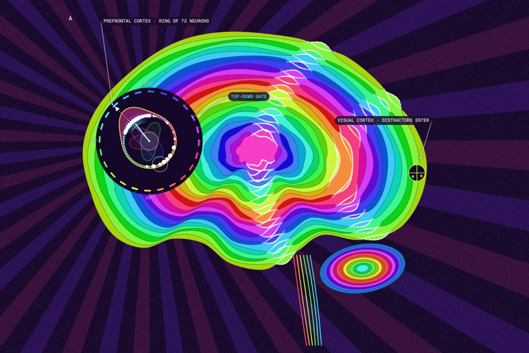

Each piece starts from something real, like brainwaves, blood flow in an fMRI scan, or a memory being replayed during sleep, and turns it into a picture that moves. They run live in your browser, and most of them respond when you click or move your mouse.
It's the sister site to NeuroSims. NeuroSims is for learning how these things work. VisualStims is for looking at them.
The stims
01 Melting Cortex
02 Up the Canal
03 In Sync
04 Blood Rush
05 Wire Together
06 Hold That Thought